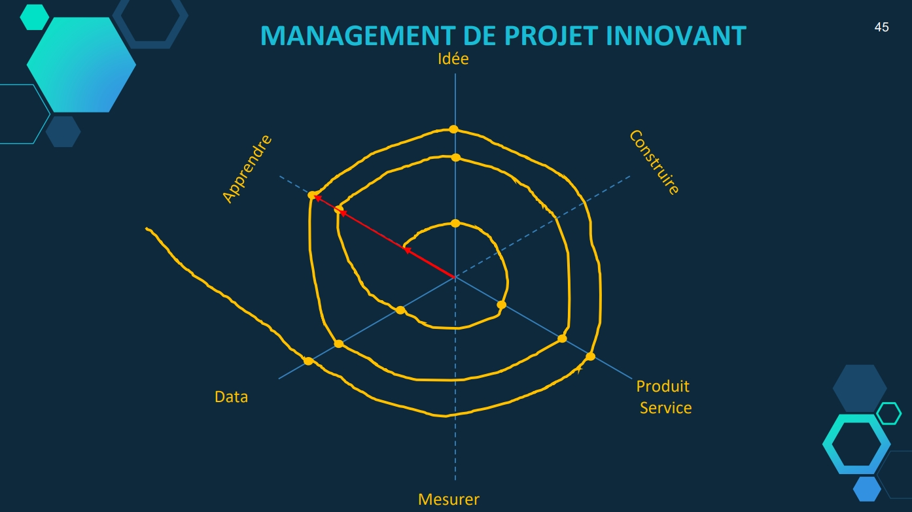
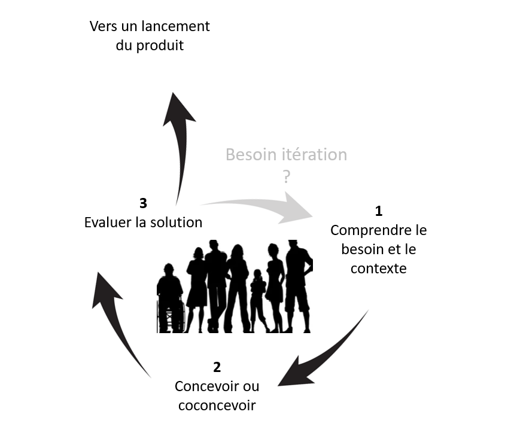

P2AC
-
Sciences du numériques et SHS
Déroulement
P2AC
Interet outils numériques/SHS pour la médiation - l'histoire
Concevoir (du contenu numérique) et mesurer (démarche centrée utilisateur)
Présentation et essai d'un outil numérique et de mesure
P2AC
Spécialisée en Sciences Humaines et Sociales (psychologie, marketing, économie, etc.)Compétences et outils (informatiques, électroniques et numériques) pour l'analyse des comportements humains
Conçoit des environnements (réels, virtuels et mixtes) contrôlés et des outils informatiques
Mesure la réaction des utilisateurs (comportementale, physiologique, cognitive, etc.)
Concevoir

Mesurer

Quelques projets hébergés par la P2AC
La plateforme s'interesse aux comportements humain.
Mesurer pour concevoir (Numérique)
Utiliser la réponse d'un humain pour developper (un produit, un service, un algo, etc.).
Concevoir pour mesurer (SHS)
Utiliser la technologie pour comprendre l'humain dans sa grande diversité et dans un contexte donné.
Interet outils numériques/SHS pour la médiation - l'histoire
Information - archives - médiation et patrimoire
Qu'apporte le numérique dans votre futur métier ?
Qu'apporte la mesure de l'utilisateur dans votre futur métier ?
Accessibilité : économique (format qui favorise la démocratisation et l'acces), population particulière (jeune, personnes présentant des handicaps), etc.
Petite galerie Louvre
Augmenter une oeuvre : proposer un contenu original en support
Mona Lisa
Réalisme, interactivité, manipuler pour mieux s'impregner - Comprendre --> technique de construction - courant artistique, des concepts, prise de decision humaines - contexte historique, etc...
Analyses des visiteurs & amélioration du parcours et de l'expérience (indications, intérêt...)
Valorisation (éco, pédagogique, recherche/savoir, récréatif...) d'un contenu (patrimoine, histoire)
Oeuvres interactives ; gamification, etc. pour ouvrir la culture à différent publique (personne agée, enfants, personnes aux caractéristiques spécifiques
Evaluer un contenu, une oeuvre, un parcours par l'analyse comportementale en vue d'améliorer l'expérience (de visite, de consommation, pédagogique, etc.)
Attention a ne pas avoir l'effet inverse : le numérique peut ne pas être pertinent, provoquer des rejet, ou ne pas être apprécié.
Bien définir les besoins ; évaluer les implémentations, etc.
Concevoir et mesurer : la démarche centrée utilisateur
Conception centrée utilisateur : méthodologie de conception d'une interface, d'un produit, d'un contenu, etc prennant en compte les besoins et retours des utilisateurs Aspect définition des besoins (quel public, handicapte, accessibilité,...)

Innovation academy à Angers Technopole
Aspect conception (technologie numérique : connaitre les technos et ce quelles impliquent)
Aspect évaluation (ergo physique, cognitive, utilisabilité, émotions, etc.)
- Comportementale : performance, eyetracker, EMG, expression faciale, capture du mouvement, etc.
- Physiologique : respiration, conductance cutanée, ECG, EEG, etc.
- Psychologique/cognitive (subjective) : personnalité, utilisabilité, émotions, charge de travail, etc. -
Focus evaluation :


- Echelle UX (pragmatique et hédonique)


- Echelle d'utilisabilité (pragmatique)


autre exemple : analyse comportementale (subjective) avec eyetracker, vidéo...
Position du regard (fixe)
Position du regard (mobile)
Position du regard (VR)
Analyse des expressions faciales
